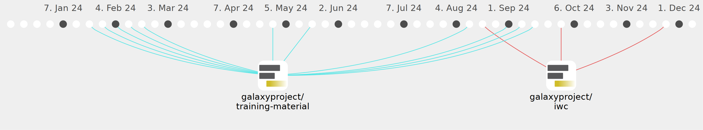

subinamehta

Commits all-time: 543
Commits last year: 201

(145)
- 3f9d255
- 9ec2a3a
- 14b3113
- 1b7bcfb
- 5dc962c
- c241d12
- 2f1b14c
- 732e4a1
- e4fec2c
- c337124
- c216fc8
- 50b6726
- 685d10f
- e8c73ed
- b951365
- dbe49ff
- ce48751
- 88e728e
- 7f49a19
- 126444d
- 23b9f9a
- 557eb03
- bc68c9b
- b47ffa4
- eec7d6f
- 93a9533
- e7fbc49
- 4834036
- 2432250
- aed9296
- 9b70224
- 940e395
- b09926a
- 1975b6a
- 89885cd
- 3cce9c6
- 80399a0
- df202d6
- 8e5875a
- a96be47
- b91ca45
- e44e506
- f9c9d9e
- b482ade
- 0013ca7
- a6e3959
- a6608d3
- 692cd4d
- 44515d7
- 522d428
- 65dd408
- 7cd6f91
- 8a4f727
- 34d21f7
- 171c568
- 1c568f2
- 880834f
- 4c442bf
- 35c47e0
- acac7e4
- 835437a
- 1e42190
- 8a29512
- 8c24142
- d9a9456
- 6f13fd9
- aef781b
- 24f3f20
- ce4aa0a
- a2473c6
- b550572
- e7c983d
- f10072f
- 5479bfa
- 37aea99
- ae30d71
- b740a06
- 1dcc844
- 98571a4
- 29cf770
- 0e38d3a
- 4d76346
- 8aea46c
- 36273e1
- 2c7c470
- 09106a2
- 90f07b0
- 00634ed
- 80eed37
- a1b25fd
- a21566a
- 62f5641
- 844bd55
- 4019398
- ac5a6ec
- b2c4391
- 7b7ca70
- 61c17a0
- b06e65d
- b429abc
- 5d47f03
- d5f07ab
- fefb155
- 4563500
- 8a419f3
- a1d7db5
- 35e7a78
- 52c0579
- a8928ba
- 0778bd8
- ed83e44
- 2399d76
- ead0f45
- 2743268
- a822717
- 3a53b7e
- cb6a505
- e8b5d39
- 4c2d5d1
- 952bf32
- 422df3b
- 2f96857
- dfbc490
- 811a921
- 9edf855
- f61d854
- c8eeddf
- 65ea049
- 4c83c44
- 53db67b
- dec1b6f
- de6aa34
- c02d0b1
- a89f8fa
- 62d7d63
- 7e3a517
- f7df02b
- f46f70d
- c6db8d8
- 99fdb50
- 89e2c91
- fdc75ff
- 1381798
- cf1b491
- f350add
(56)
- 710b24f
- 3210086
- 164e033
- 46bd5e7
- 985a690
- 0e05276
- 5fcca17
- d8ac687
- 6b00a4a
- edbcc90
- fa15151
- e7cf9db
- 57f1a20
- 99d8ab0
- a2a7954
- 0ce051a
- 6dcc2a3
- 35b19e9
- 3c28cf2
- 14f5ddd
- 406e331
- e43526b
- d8ad8dc
- 9c135ea
- 3d677dd
- 299ec36
- 4228825
- 6d68404
- af15232
- 587c08c
- fbac866
- 5499333
- bbd8019
- aa55ecd
- 1fb0474
- da9efa5
- 49018cf
- b00b814
- ec6b0b5
- ddefa07
- 16404bc
- b11b562
- 950291a
- c25bf3f
- 3bf3bf9
- 85dafeb
- 7792b1f
- 780b66a
- 82590ba
- b103b90
- 5f9aaac
- 15f2bf0
- dd34a9b
- efd3c82
- cd5b76e
- 8d08ad6